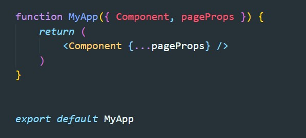
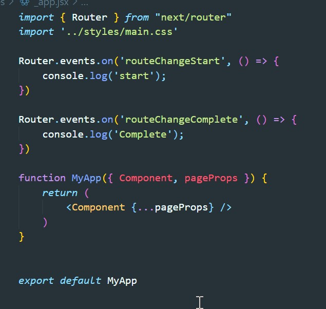

Файл _app.jsx помещенный в папке pages должен выглядеть вот так:
Этот компонент будет оборачивать наше приложение и будет фигурировать как madlleware
Router может вешать слешатели которые будут вызывать callback перед началом роутинга и после его завершения.
Complete - будет выполнен тогда когда компонент будет полностью отрисован. Т.е. если в getServerSideProps будет выполняться долгая ассинхронная операция, то Complete выполнится только после того как async будет полностью выполнен